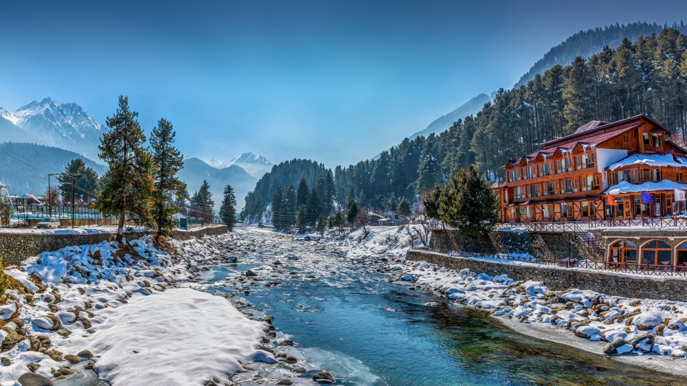
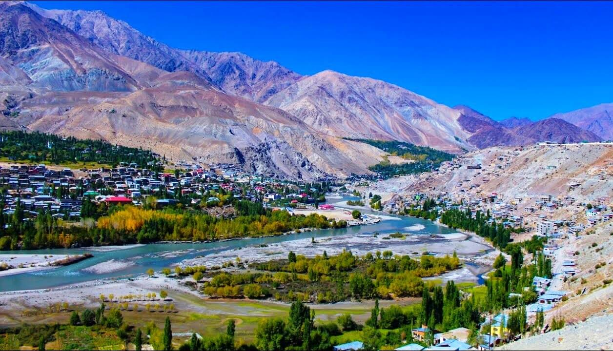

Gurez Valley
Gurez Valley is located in the northern region of Jammu and Kashmir, is a hidden gem known for its pristine beauty, serene environment, and rich cultural heritage. It is nestled in the high Himalayas, approximately 123 kilometers from Srinagar, Gurez Valley is situated near the Line of Control (LoC) and remains relatively untouched by mass tourism, offering a peaceful retreat for those seeking solitude and natural beauty. the main attractions point are Dawar, Habba Khatoon Peak,Kishanganga River, Tulail Valley, Razdan pass, and many more.

Pahlagam
Pahalgam is often referred to as the "Valley of Shepherds," is a picturesque town nestled in the Anantnag district of Jammu and Kashmir. It is located about 95 kilometers from Srinagar, Pahalgam is a popular tourist destination known for its breathtaking landscapes, lush green meadows, and pristine rivers. Situated at the confluence of the Lidder River and Sheshnag Lake, this serene town serves as the starting point for the annual Amarnath Yatra pilgrimage and is a haven for nature lovers, adventure enthusiasts, and those seeking peace and tranquility. The key attractions are Betaab valley, Aru Valley, Lidder River, Baisaran, Sheshnag Lake, Tulian Lake, Amarnath Cave, Mamal temple and many more.

Kargil
Kargil is located in the Ladakh region of northern India, is a town steeped in history, natural beauty, and strategic significance. It is situated at an altitude of about 2,676 meters along the banks of the Suru River, Kargil is the second-largest town in Ladakh and serves as a gateway to the Zanskar Valley. It is known globally for the 1999 Kargil War between India and Pakistan, the town has since become a symbol of resilience and patriotism. Beyond its historical importance, Kargil is also a destination for those seeking adventure, cultural experiences, and breathtaking landscapes. The key attractions are Kargil war Memorial, Drass valley, Suru Valley, Rangdum Monastery, Zanskar Valley, Pensi La Pass and many more.